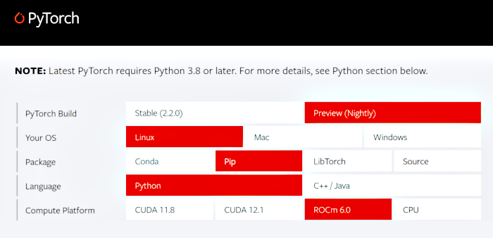

Since the last post has been written, there has been a few interesting developments in the world of large language models.
Notably, the industry wide support of AMD GPUs continues apace, with large frameworks like PyTorch even offering regular and up-to-date releases supporting the latest versions of ROCm as it rapidly reaches feature parity with CUDA.

Historically the "red team" track record was somewhat mixed, with only the top and Pro-series GPUs supported, but as of ROCm v6.0, AMD has quietly enabled this on all cards on Linux.
So if you have one, consider giving it a shot; your mileage might vary of course, as many of these large language models and their respective datasets are quite large and may not necessarily fit in low-end consumer hardware.
Compared to even a few years ago, installation to take advantage of an existing Radeon card is straightforward.
Simply create a Python venv and then activate. Afterwards, install PyTorch with the desired Python wheel:
python -m venv ~/python_venv
source ~/python_venv/bin/activate
pip3 install --pre torch torchvision torchaudio --index-url \
https://download.pytorch.org/whl/nightly/rocm6.0
All done, now you can spin up llamas with ease!
Actually many applications and frameworks support AMD now, some of the more interesting ones include:
On that note, an exciting update to the llama.cpp is the recent Vulkan backend implementation project which attempts to "bridge the gap" and allows pretty much any device with Vulkan shaders to run a LLM and on nearly any modern operating system.
Potentially both Mac or Windows developers could take advantage of this to run LLMs faster; as could programmers on more compact or embedded platforms, such as Android phones or the newer variants of the Raspberry Pi.
A more interesting aspect of the Vulkan backend is that GPU shader architectures are created with parallelization in mind, potentially allowing cost efficient customer hardware to run large language models with a greater number of tokens per second.
So with that in mind, it is worth testing this concept to determine how good an idea this might be.
Two very interesting and popular models in the AI developer community, that are also not-to-large in terms of parameters, are as follows:
For this benchmark, two simple prompts were selected:
Write me a python function that can read a CSV file into a Pandas DataFrame
Tell me about the planet Mars
The command used to start the llama.cpp server instance is below, where XX was the number of layers to defer to the GPU via the Vulkan backend:
cd llama.cpp
./server -m /path/to/llm_models/name_of_model.Q8_0.gguf --n-gpu-layers XX
Since running the full LLM model itself on cost-efficent hardware is unlikely to be desirable, 8-bit quantized versions of these models were used. Quantized models are slightly lower quality in their responses but are somewhat faster and also offer a lower memory footprint; allowing them to be ran on CPUs alone.